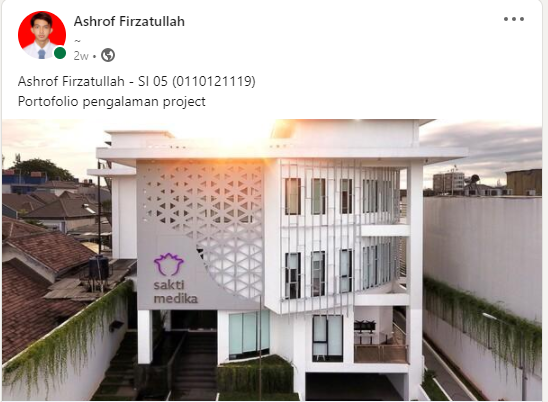

Kreasi Mahasiswa
- Selamat Datang di Website Kreasi Mahasiswa STT Terpadu Nurul Fikri
-
Kreativitas adalah kemampuan untuk menciptakan sesuatu yang baru,
baik yang benar-benar merupakan hal baru atau sesuatu ide baru yang diperoleh
dengan cara menghubungkan beberapa hal yang sudah ada dan menjadikannya
suatu hal baru.
Selain itu, kreativitas adalah hal-hal yang membuat kita
takjub dengan hal-hal baru, karena kreativitas bisa mewujudkan ide-ide cemerlang kita.
Mengingat tuntutan global yang semakin kompetitif, maka lulusan perguruan tinggi dituntut pula akan kepemilikan academic knowledge, skill of thingking, mangement skill dan communication skill. Kreativitas adalah penjelmaan integratif dari tiga faktor utama dalam diri manusia yaitu: pikiran (kognitif) perasaan (afektif) dan keterampilan (psikomotor).
Sebagai mahasiswa kita diharuskan untuk terus aktif dan produktif terlebih di masa pandemi Covid-19 yang menuntut kita untuk terus menyesuaikan diri dengan kebiasaan baru. Kemudian kreatif, setiap mahasiswa memiliki kemampuan dalam mengembangkan suatu kreatifitas untuk menciptakan hal baru.
Maka dari itu, website ini dijadikan sebagai wadah untuk pengumpulan segala bentuk karya Mahasiswa STT Terpadu Nurul Fikri yang mana karya ini merupakan hasil karya dari mahasiswa itu sendiri dan memiliki sifat orisinal. Selain itu, website ini bertujuan untuk menggali dan menumbuhkan potensi dan bakat minat mahasiswa serta sebagai pendorong agar mahasiswa STT Terpadu Nurul Fikri dapat termotivasi untuk terus berinovasi.
Month of Creation
Month of Creation adalah suatu bentuk pengumpulan karya mahasiswa STT Terpadu Nurul Fikri seperti suatu program, project, karya tulis, fotografi, videografi, dll. dalam jangka waktu satu bulan. Jika kalian (Mahasiswa STT Terpadu Nurul Fikri) tertarik untuk membagikan karya kalian, kalian bisa langsung mendaftarkan diri dengan cara klik link dibawah ini.
Contoh Karya Project Mahasiswa
> Kreasi mahasiswa STT Terpadu Nurul Fikri, berikan karya yang terbaik untuk negeri tercinta Indonesia.
Kampus A STT-NF
Jl. Setu Indah No.116,
Kelapa Dua Depok.
support@kreasi.nurulfikri.ac.id>